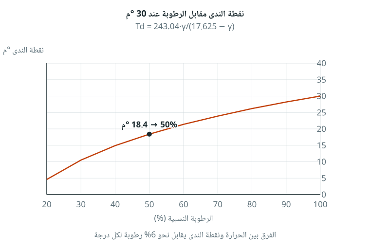

نقطة الندى والتكاثف
Dew point
الحرارة التي يبلغ عندها الهواء تشبّعه إن بُرّد بثبات بخاره؛ وهي مقياس مطلق للمحتوى لا يتغير بتدفئة الغرفة، ويبدأ عندها التكاثف على النوى والأسطح الباردة.
نقطة الندى حرارةٌ يبلغ عندها الهواء تشبّعه بالبخار إن بُرّد بثبات الضغط ومحتوى البخار. عند هذه الحرارة يتساوى الضغط الجزئي للبخار مع ضغط البخار المشبع، فيبدأ التكاثف على الأسطح والنوى. لا يُضاف بخار ولا يُزال خلال التبريد، فالمتغير الوحيد هو الحرارة.
نقطة الندى مقياس مطلق لرطوبة الهواء: قيمتها لا تتغير عند تغيير حرارة الغرفة لأنها تعبّر عن محتوى البخار. لذلك تُستعمل في الأرصاد وحسابات العفن وتصميم المجففات أكثر من الرطوبة النسبية، ولها علاقة مباشرة بحدوث الضباب والصقيع على الأسطح.
كيف تعمل الظاهرة؟
السلسلة: كتلة هواء ذات ضغط جزئي ثابت e تبرد بإشعاع ليلي أو بتماس سطح أبرد. ضغط التشبع e_s دالة أُسّية في الحرارة يهبط مع التبريد، فترتفع الرطوبة النسبية حتى تبلغ 100% عند نقطة الندى. أي تبريد إضافي يجعل e أكبر من e_s، فيصبح البخار فوق التشبع ويتكاثف على النوى أو على السطح الأبرد. الحرارة الكامنة المتحررة عند التكاثف تُبطئ التبريد وتعمل ضابطًا ذاتيًّا. وعند نقطة ندى تحت الصفر يتحول البخار إلى جليد بالترسّب بدل المرور بالماء السائل.
العلاقة بالأرقام
معادلة ماغنوس: Td = 243.04·γ/(17.625 − γ)، مع γ = ln(RH/100) + 17.625·T/(243.04 + T)، بدرجات مئوية. عند 30 °م ورطوبة 50% يكون γ = 0.893، ومنه Td = 18.4 °م. وعند رطوبة 80% يصبح Td = 26.2 °م، وعند 100% يتساوى مع حرارة الهواء. الفرق بين الحرارة ونقطة الندى يسمى الانتشار، وكل درجة منه تقابل نحو 6% من الرطوبة النسبية قرب 30 °م؛ لذلك تكفي درجتان ليتكاثف البخار على زجاج بارد في غرفة رطبة.
مفاهيم متقاربة
الخلط الأول: نقطة الندى ليست حرارة الهواء الحالية، بل الحرارة التي يبدأ عندها التكاثف. الثاني: ليست الرطوبة النسبية؛ فالثانية نسبة تتغير بالحرارة، والأولى مقدار مطلق للمحتوى. الثالث: نقطة الندى ليست نقطة التجمد؛ تحت الصفر تصف حرارة تكوّن الصقيع بالترسّب لا انتقال ماء سائل إلى جليد. الرابع: الضباب ليس تكاثفًا يملأ الهواء؛ يحتاج تبريدًا قرب السطح ونوى، وقد يتشكل بإضافة بخار من سطح ماء دافئ، وهذا يرفع نقطة الندى لا يخفض حرارة الهواء.
حدود التطبيق
معادلة ماغنوس تقريبية، وخطؤها داخل ±0.4 °م بين 40 تحت الصفر و50 °م فوق الماء، ويزيد قرب التجمد حيث تختلف معاملات التشبع فوق الجليد عن الماء بنحو 0.3 °م. التنبؤ بالندى على سطح يحتاج حرارة السطح لا حرارة الهواء، وقد يكون السطح أبرد بعدة درجات بالإشعاع. نقطة الندى لا تخبر عن سرعة التكاثف، فالمعدل يعتمد على معامل النقل الحراري والكتلي وعلى حركة الهواء. وفي الهواء النقي جدًّا قد لا يحدث الضباب عند نقطة الندى بسبب نقص النوى.

| الكمية | القيمة | المصدر |
|---|---|---|
| نقطة الندى عند 30 °م ورطوبة 50% | 18.4 °م | [2] |
| نقطة الندى عند 30 °م ورطوبة 80% | 26.2 °م | [2] |
| ثابت ماغنوس في حدّ البسط | 17.625 بلا وحدة | [2] |
| ثابت الحرارة في معادلة ماغنوس | 243.04 °م | [2] |
المصادر
- 1 Relative Humidity — NOAA National Weather Service — JetStream. www.weather.gov/jetstream/rh · اطُّلع عليه 2026-11-16
- 2 Why Dewpoint Is a Better Measure of Moisture Than Relative Humidity — NOAA National Weather Service — La Crosse. www.weather.gov/arx/why_dewpoint_vs_humidity · اطُّلع عليه 2026-11-16
استشهد بهذا المصطلح
الصيغتان مبنيتان من بيانات الصفحة نفسها: العنوان والتاريخ ورابط النسخة المنشورة.
نقطة الندى والتكاثف — Dew point. (2026). ديوان المعرفة — انفراد. https://infiradev.com/diwan/terms/dew-point.html
@misc{dew-point2026,
title = {نقطة الندى والتكاثف},
titleaddon = {Dew point},
howpublished = {{ديوان المعرفة — انفراد} — مرجع علمي عربي},
year = {2026},
url = {https://infiradev.com/diwan/terms/dew-point.html},
urldate = {2026-11-16},
note = {مراجعة علمية: مراجعة آلية — ديوان المعرفة (روابط المصادر + عقد المحتوى + وجود الرسم) 2026-11-16}
}
راجعه: مراجعة آلية — ديوان المعرفة (روابط المصادر + عقد المحتوى + وجود الرسم) 2026-11-16 · 2026-11-16 · آخر تحديث 2026-11-16